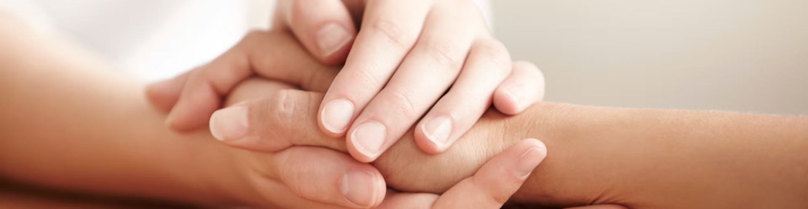
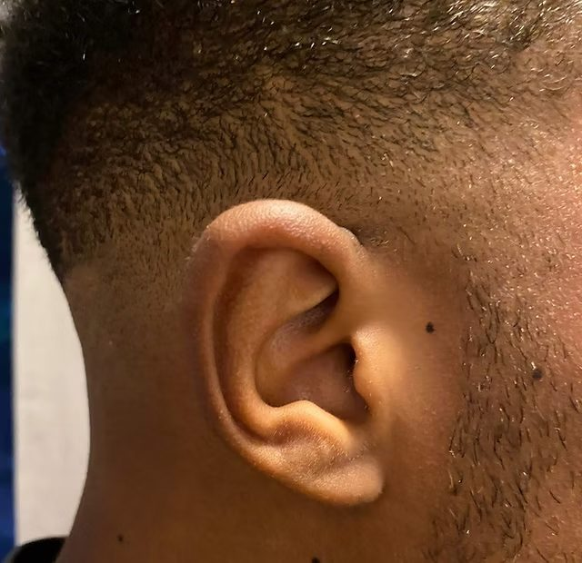

Foot reflexology
Pressure applied to reflexes on the foot activates the nerves, encouraging the brain to work towards balance — holistically supporting physical and mental health.
See prices →A calm, professional space to breathe — away from the demands of the day — where your body can reset and restore. Foot, hand and auricular reflexology with Pamela, a Level 5 reflexologist.

Reflexology takes the whole person into account, helping to activate your natural healing processes and restore physical and emotional well-being.
Reflexology is a gentle, holistic therapy based on the idea that points on the feet, hands and ears correspond to different areas of the body. By applying careful pressure to these reflexes, a session encourages the body towards its own natural balance.
We begin with a friendly chat about how you're feeling and what you'd like from your session. There's no rush — this is your time.
Pressure is applied to reflexes on the feet, hands or ears. It's calming rather than uncomfortable, and many people find it deeply relaxing.
The aim is to help your body reset itself, supporting both physical and emotional well-being. Ear seeds can extend the benefits at home.
Pressure applied to reflexes on the foot activates the nerves, encouraging the brain to work towards balance — holistically supporting physical and mental health.
See prices →
Working reflexes mirrored across the body, hand reflexology is a lovely way to relax the hands and ease pain and tension in the wrists and finger joints.
See prices →
A relaxing session working the reflexes on the ear, which can be followed by ear seeds applied to relevant points to extend the treatment for several days.
See prices →Trained to Level 5, with ongoing study in finger-free and auricular reflexology.
A registered member of the Association of Reflexologists.
Professionally insured for complete peace of mind.
A soothing space at Pamela's home or Action First Physiotherapy, Snaith.
To provide a space where you can breathe, away from the demands of the day, and allow your body to reset itself.
“Every human being is the author of his own health or disease.”
— Buddha
“I left feeling lighter and completely relaxed. A genuinely calming experience.”
“Pamela is professional and kind. My sessions have become an essential part of my month.”
“A wonderfully relaxing treatment in a calm, welcoming space. Highly recommend.”
Book a foot, hand or auricular reflexology session at Pamela's home in Hatfield or at Action First Physiotherapy, Snaith.